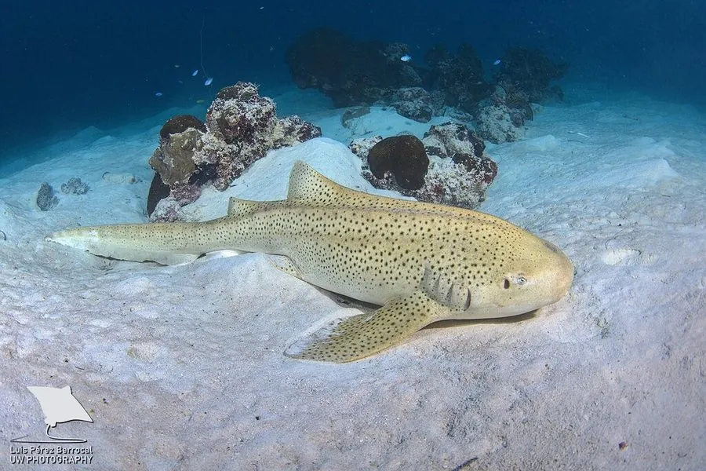

鱼类 · 动物界
豹纹鲨 Stegostoma tigrinum

幼鱼身披黑白条纹、成鱼布满豹纹斑点的底栖鲨鱼，尾鳍极长，是印度洋—太平洋珊瑚礁的潜水明星。
- 分类
- 门脊索动物门纲软骨鱼纲目须鲨目科豹纹鲨科属豹纹鲨属
- 栖息环境
- 珊瑚礁、沙地和海草床，水深通常不超过 60 m
- 地理分布
- 印度洋—太平洋热带和亚热带海域，中国南海和台湾周边有分布
- 保护级别
- IUCN 濒危（EN）；中国未列入国家重点保护野生动物名录
物种志
豹纹鲨体呈圆柱形，体侧有 5 条纵向的皮褶，尾鳍极长，几乎占体长的一半。幼鱼体色深褐，身上有醒目的白色横纹，像斑马；随着年龄增长，条纹逐渐断裂成斑点，成鱼通体布满深褐色的豹纹状斑点。成鱼体长一般 2–3 m，最大可达 3.5 m。
豹纹鲨分布于印度洋—太平洋的热带和亚热带海域，从东非、红海到日本、澳大利亚，中国南海和台湾周边有分布。它栖息在珊瑚礁、沙地和海草床，水深通常不超过 60 m，夜间活动，以软体动物、甲壳类和小鱼为食。豹纹鲨为卵生，雌鲨产下带触须的卵鞘，卵鞘附着在礁石上。由于沿海开发和观赏鱼贸易，其种群下降，IUCN 将其列为濒危。
形态与习性
- 食性软体动物、甲壳类和小鱼
- 体长一般 2–3 m，最大可达 3.5 m
- 体色幼鱼黑白条纹，成鱼豹纹状斑点
- 活动节律夜间活动，白天多伏在沙底或礁石旁
- 繁殖卵生，卵鞘带触须，附着在礁石上
- 尾鳍极长，几乎占体长的一半
趣味知识
- 豹纹鲨幼鱼身上是黑白条纹，长大后才变成豹纹斑点。
- 它的尾鳍几乎和身体一样长，游泳时像一条飘带。
- 豹纹鲨的卵鞘带有触须，能缠附在礁石和海草上。